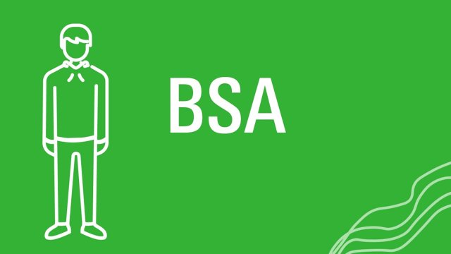
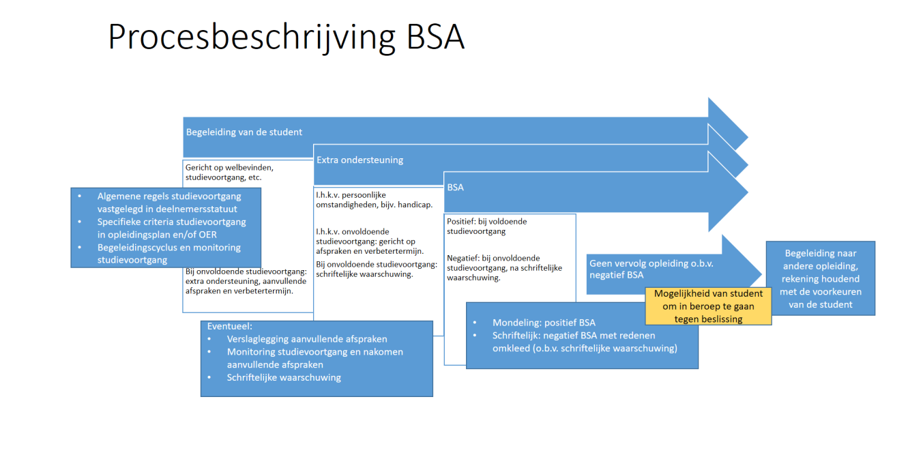
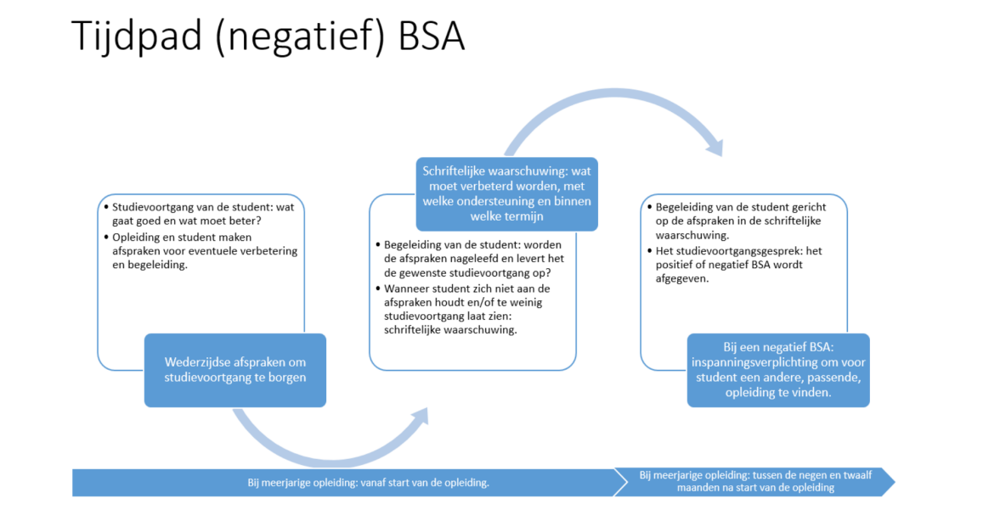

Bindend Studieadvies

Wat is BSA?
Bindend Studieadvies (BSA) is een belangrijk aspect van het hoger onderwijs dat van invloed is op jouw studievoortgang en toekomstige carrière. Korte video over BSA!
Definitie van BSA
Het Bindend Studieadvies, afgekort als BSA, is een regeling in het hoger onderwijs die bepaalt of een student mag doorgaan met zijn of haar opleiding na het eerste jaar.
Wat is doel van BSA ?
Wat zij criteria's voor BSA?
Hoe ziet beordeling eruit?
Wat is negatief BSA?
Een negatief BSA kan serieuze gevolgen hebben, waaronder het stopzetten van de studie. Studenten moeten goed op de hoogte zijn van de regels en studiebegeleiding zoeken als ze moeilijkheden ondervinden.
Begeleiding van BSA
Veel onderwijsinstellingen bieden BSA begeleiding en ondersteuning aan studenten. Is goed om gebruik te maken van deze hulpbronnen als je studieproblemen ervaart.

